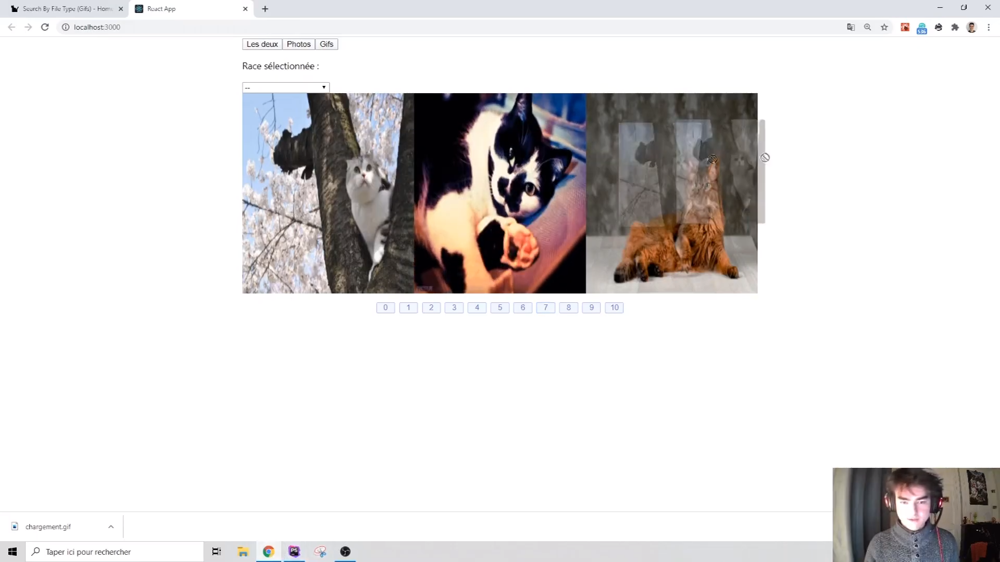

Créer une gallerie d'affichage de photos de chats, qui va aller interroger l'API catApi.
fetchCatsau click.fetch, interroger l'API des chatsCet exercice est difficile, prenez votre temps étape par étape. Vous allez y arriver !
fetch permet de récupérer des données.
Exemple :
fetch('http://haha.com/haha')
envoie une requête à l'adresse `'http://haha.com/haha'`.
Si cette adresse correspond à une adresse de backend, alors l'API peut renvoyer des données.
Essayez avec https://api.thecatapi.com/v1/images/search pour voir !
fetch("https://api.thecatapi.com/v1/images/search")
Vous pouvez consulter le résultat dans l'inspecteur du navigateur, dans l'onglet Network
select de HTML,
et déclencher un événement onChange quand on choisit une valeur.
Résultat attendu :
